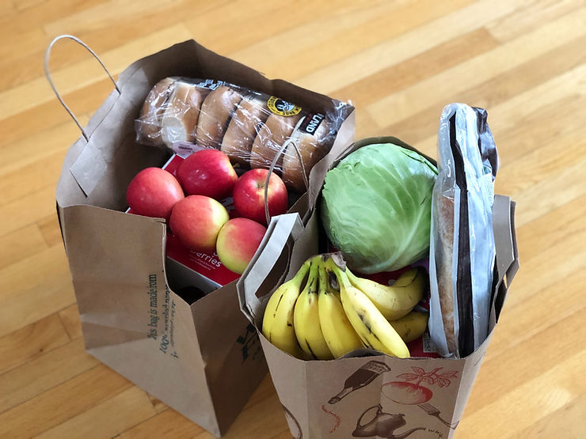

Sakai Facilitates Food Bank Leadership Program During Pandemic

Mar 10, 2021
1 min read

LevelUp!, a new Food Bank Leadership Program, is utilizing Sakai to help train Food Bank leaders in next level leadership skills.
Why it Matters:Sakai’s tools enable LevelUp! faculty and executive coaches to create a learning environment that increased their capacity to help their communities during Covid. Sakai enabled LevelUp! to create:
- Intensely collaborative learning spaces
- Innovative courses
- Student evaluation
- Individual mentoring
The Bottom Line:LevelUp!, powered by Sakai, created a community of food bank leaders who could rely on each other for collaborative problem solving and stress management. LAMP Learning Consortium provided the platform for LevelUp!’s small program. LAMP’s goal is to enable smaller learning organizations to utilize Sakai without the hassle or cost of self-hosting.
Recent Posts